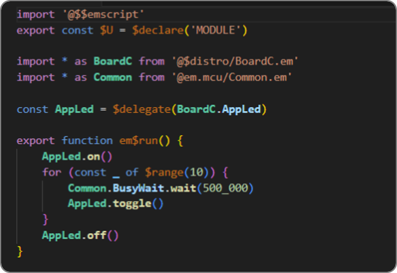
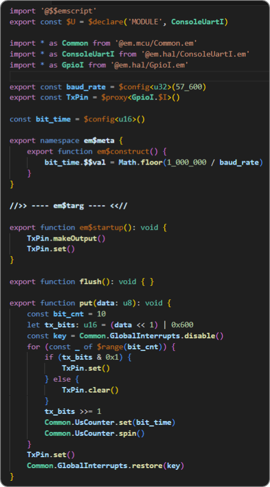
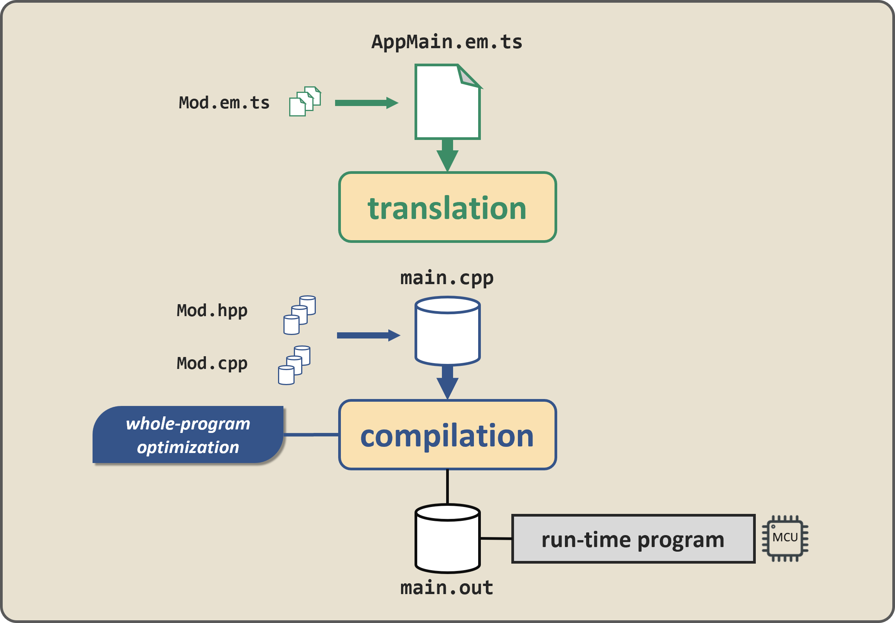
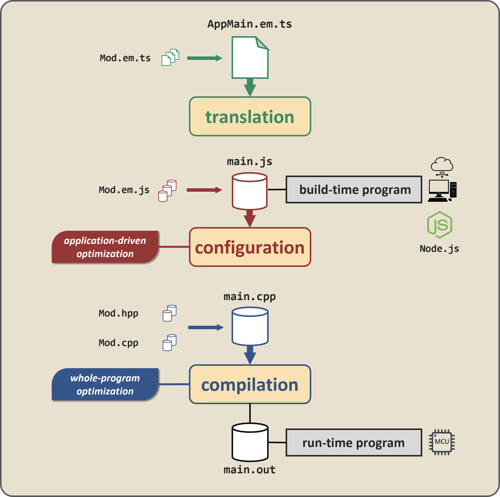
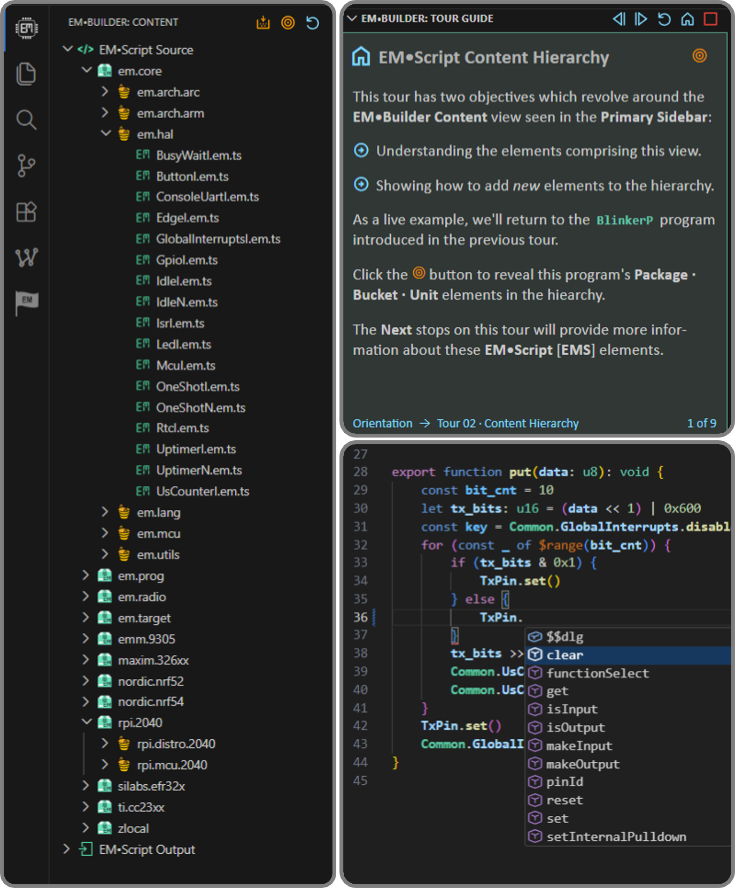
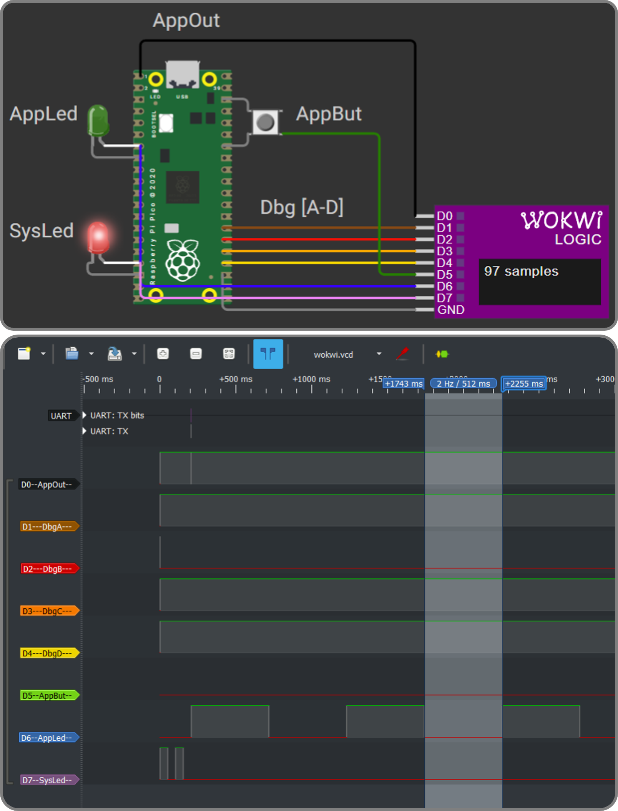

Every byte and μJoule matters
Programming resource-constrained MCUs remains a constant challenge when developing low-cost, low-power embedded systems.
Embedded SW design and implementation has an ever-growing impact on system performance, energy efficiency, and life-cycle costs.
C leaves performance on the table
After more than fifty years, the C programming language continues to dominate software development for embedded systems.
An ideal “medium-level” language for 8-, 16-, and 32-bit MCUs, C programmers can directly touch bare-metal HW using structured SW.
But as systems grow more complex, C programmers layer more macros, indirections, and defensive APIs onto their ever-expanding codebase.
Pushing C to the brink, attempts to mitigate program complexity can in fact incur additional run-time overhead – wasting time, space, and power.
A new language for embedded systems
EMScript reverses the embedded C trajectory – offering higher-level language constructs which do not incur higher levels of run-time overhead.
Using a novel translator which emits C++ object code from TypeScript-based sources, EMScript programs regularly outperform legacy C.
But unlike other mainstream languages which evolved from C, EMScript expressly focuses on reducing the size of embedded firmware.
Armed with EMScript, applications consuming hundreds of kilobytes could now run in (say) 32K of SRAM – at lower power levels and cost points
Show me the code… “hello world”
You can’t call yourself a programming language if you can’t do this: 👋 🌎

Unusual printf syntax – perfectly legal TypeScript.
Show me the code… blink that LED
The true “hello world” example for any embedded programming platform:

~1K of code in EMScript – how big is yours ??
Show me the code… bit-bang UART TX
100% portable EMScript – higher-level programming and higher-levels of program performance.

The em$meta and em$targ labels hint at something deeper within the EMScript translator as it processes $config and $proxy constructs.
At first glance – a simple transpiler

A command-line tool, the EMScript translator emits C++ code for every .em.ts source file the application may ultimately import.
Using internal TypeScript APIs, the translator processes $config and $proxy by overlaying EMScript semantics on TypeScript syntax.
For each EMScript module, the translator emits Mod.[hpp,cpp] and then arranges for main.cpp to ultimately #include all generated code.
Feeding one merged C++ file to the downstream MCU compiler enables whole program optimization, which markedly shrinks run-time code.
The innovation – build-time configuration

The configuration phase – upstream from program compilation – represents the defining innovation of the EMScript translation flow.
As in target compilation, the translator first emits Mod.em.js for every EMScript module; main.js will then import all generated code.
But unlike target compilation main.js serves as the meta-program – running on a Node.js desktop rather than a resource-constrained MCU.
The configuration phase in fact serves as a build-time staging area – enabling an unconstrained “dry-run” of the target application program.
Just as modules contribute target functions invoked at run-time, they can also shape program configuration through build-time meta functions.
With every EMScript module actively participating, a new category of application-driven optimizations starts to emerge.
EMScript – its own meta-language
Using the same language syntax and semantics to express target as well as meta functions reflects the novelty of the EMScript translator.
In this flow, intrinsic constructs like $config parameters and $proxy modules act as build-time variables which harden into run-time constants.
With all of Node.js available during configuration, meta-functions can bring extensive resources to bear when computing $config or $proxy values.
Once frozen, downstream compilation can fold $config values across the target program as well as directly call (or even inline) $proxy methods.
Less memory, more compact code, no run-time indirection – just higher-level programming with higher levels of run-time performance.
Use VS Code – familiar and proven
VS Code draw developers working in multiple languages and application domains – including embedded programming in C/C++.
Write TypeScript – built-in tooling
Using TypeScript brings autocomplete, navigation, refactoring, formatting, and diagnostics directly from VS Code’s built-in language services.
Add EMBuilder – from tour to target
The EMBuilder extension augments VS Code with EMScript-aware views, guided tours, and integrated build · run workflows.


Backed by The EM Foundation
The EM Foundation promotes, sustains, and evolves EM™ programming technology for the embedded systems community.
Formed in 2023 as a California public benefit corporation, it operates as a 501(c)(3) nonprofit.
15+ years of real-world experience
Since 2010, EM programming technology has supported more than twenty 8-, 16-, and 32-bit MCUs across a dozen silicon vendors.
Commercial deployments on select platforms have demonstrated measurable reductions in code size, power consumption, and system cost.
EMporium – the nexus of EMScript content
Visit it, follow it, install it, learn it, discuss it, and ultimately contribute your own content to it.
An EMporium of tiny code
A shared repository of reusable EMScript content for resource-constrained embedded systems, where every byte and μJoule matters.
10× smaller than legacy C
Higher-level language constructs combined with build-time specialization enable order-of-magnitude reductions in run-time code size.
10× impact on silicon PPA
Comparable order-of-magnitude improvements in power · performance · area for next-generation MCUs targeting deeply-embedded systems.